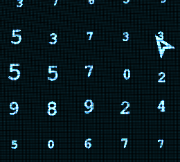

Welcome! It is your first day as a macrodata refiner! You task to refine the numbers correctly and make sure to do those files. We wouldn't want any horseplay. I'm sure you'll fit right in wiht you other coworkers! You job is to sort the data with the files and with the data in front of you.
Your job is according:
As a final note, if you have any questions on workplace culture or and question about management make sure to read the Kier handbooks!
if you are having trouble here some tips
| What it looks like | What to do | Bonus tips |
|---|---|---|
|  | This is the main objective of macrodata refinement, to get the numbers into the boxes | The zones of the scary numbers are pretty big so try and sweep a big area |
| These tell you how much the total for each file you have completed | Try not to worry about the files completion just worry about the total completion amount | |
| This is tells you how much of the total file you have done | There might be a suprise at 80% or so |